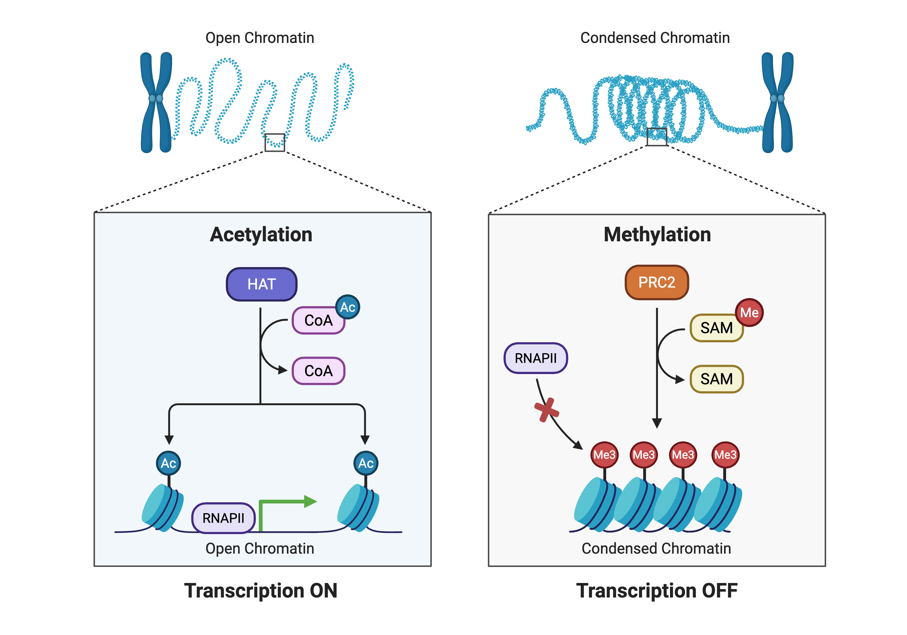
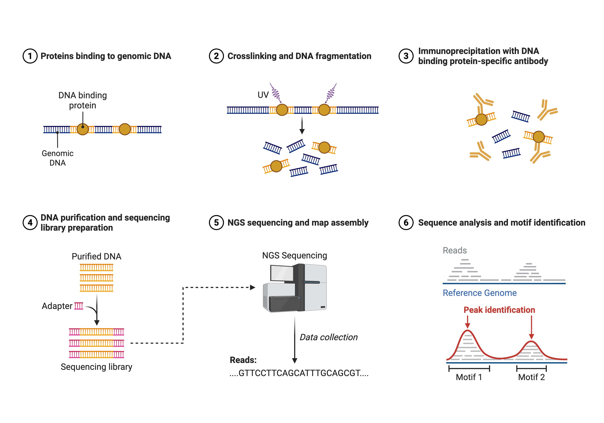
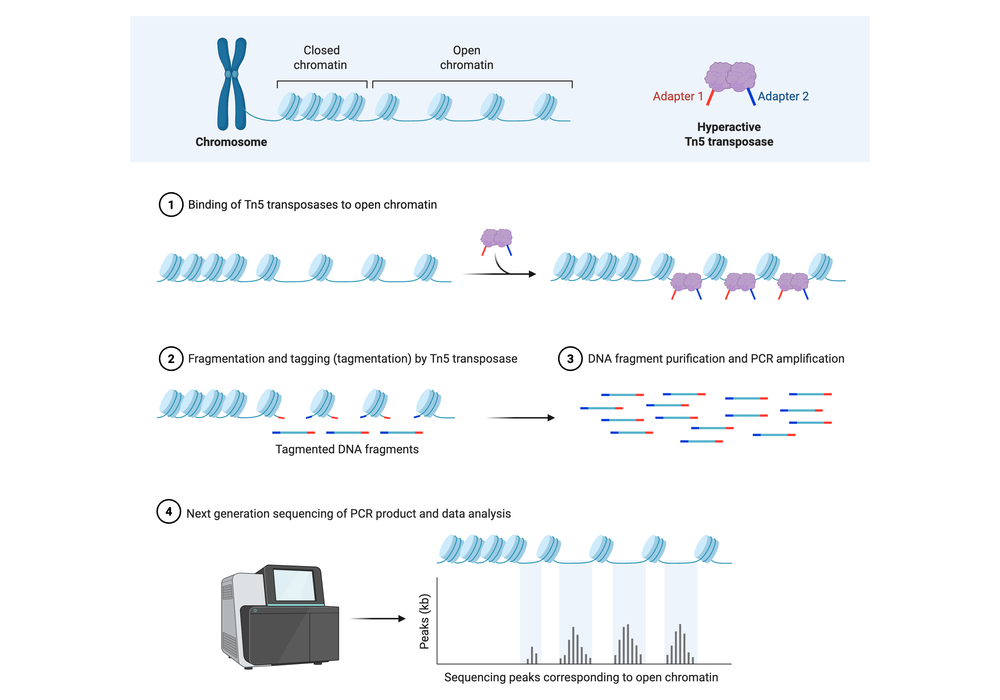
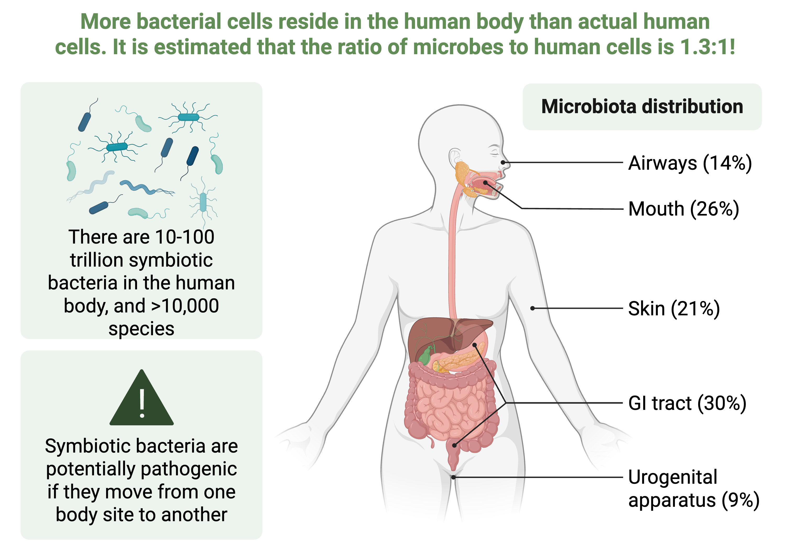
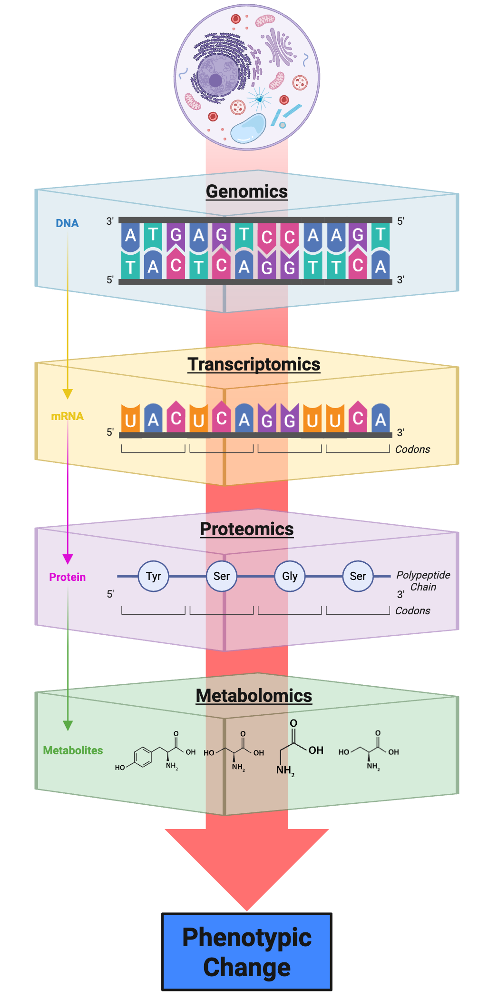

8 Alternative Post‑Alignment Workflows
8.1 Introduction
The previous chapters have focused on variant calling workflows using tools like GATK, providing a foundation for understanding how sequencing reads are processed, aligned, and analyzed to identify genomic variants. However, the power of next-generation sequencing extends far beyond simple variant discovery. The same fundamental technologies—Illumina short-read sequencing, PacBio long-read sequencing, and Oxford Nanopore sequencing—can be deployed to answer diverse biological questions across multiple scales of organization1. In this chapter, we explore alternative post-alignment workflows that leverage these sequencing technologies for applications ranging from population genetics to transcriptomics, epigenomics, metagenomics, and integrative multi-omic analyses.
As introduced in Chapter 1 (Figure 1.1), the history of genomics has been marked by technological innovation that has progressively expanded our capacity to interrogate biological systems. The completion of the Human Genome Project in 2003 was followed by the development of next-generation sequencing platforms that dramatically reduced both the cost and time required for genome sequencing1. This democratization of sequencing technology has enabled researchers to apply genome sequencing to address five key perspectives that shape modern genomics research.
8.2 Five Perspectives on Genome Sequencing
Pevsner outlines five complementary perspectives that frame how we approach genome sequencing projects1. These perspectives provide a conceptual scaffold for understanding the diverse applications of sequencing technologies and serve as organizing principles for the remainder of this chapter.
The first perspective involves cataloging genomic information at the most fundamental level. This includes basic features such as genome size, chromosome number, GC content, gene count, and the identification of repetitive elements. Genome browsers and annotation pipelines represent the primary tools for organizing and presenting these catalogs. The reference genomes maintained by consortia like the Genome Reference Consortium provide the foundation for comparative analyses across individuals and populations.
The second perspective emphasizes comparative genomics, recognizing that our understanding of any single genome is dramatically enhanced through comparison with related genomes. Questions about orthology, synteny, and the timing of speciation events require whole-genome alignments and phylogenetic reconstruction. Tools like the UCSC Genome Browser and Ensembl Genomes facilitate these comparisons by providing pre-computed alignments and evolutionary annotations.
The third perspective focuses on biological principles, asking how genome content and organization serve the functions of organisms and how evolutionary forces shape genome architecture. This includes consideration of gene birth and death, polyploidization, positive and negative selection, and the role of epigenetic regulation. Population genetic analyses using tools like BLAST and molecular phylogenetic methods help address these fundamental questions.
The fourth perspective centers on human disease relevance, examining how genomic variation contributes to disease susceptibility and how pathogens exploit host biology. Single nucleotide polymorphisms, copy number variants, and structural variants are analyzed through linkage studies, genome-wide association studies, and functional genomics approaches to identify disease-causing mutations and therapeutic targets.
The fifth perspective addresses bioinformatics infrastructure, including the databases, software tools, and computational workflows required to analyze and visualize genomic data. The explosion of sequencing data has necessitated development of specialized file formats, compression algorithms, and cloud computing platforms to manage and distribute genomic information at scale.
These five perspectives are not mutually exclusive but rather represent complementary lenses through which we view genomic data. The alternative workflows discussed in this chapter draw upon multiple perspectives simultaneously, reflecting the integrative nature of modern genomics research.
Look back over the assignment you submitted for Lab 2 where you framed a genome sequencing project based on these perspectives. While you may have previously only considered a traditional NGS workflow, now consider the alternative post-alignment workflows and other sequencing platforms introduced below. What might you consider changing if you were to re-submit this narrative? How might some you improve your ability to test your hypotheses by adding another sequencing strategy?
8.3 DNA Sequencing Applications
DNA sequencing workflows that go beyond standard variant calling encompass several major application areas, including population genetics, ancient DNA analysis, and whole-genome resequencing projects. Each application presents unique computational challenges and biological insights.
8.3.1 Population Genetics and Resequencing Projects
Population genetics leverages DNA sequencing to understand allele frequency distributions, genetic structure, linkage disequilibrium patterns, and demographic history across populations. Whole-genome resequencing of multiple individuals from the same or different populations enables inference of selection pressures, migration patterns, and population size changes over evolutionary time. The computational workflow typically involves variant calling across all individuals simultaneously, followed by population genetic analyses that estimate parameters such as nucleotide diversity and estimating natural selection2. This topic will be covered in more depth in Chapter 12.
The 1000 Genomes Project, initiated in 2008 and completed in 2015, represents a landmark achievement in population genomics3. This international consortium sequenced the genomes of over 2,500 individuals from 26 populations across Africa, Europe, Asia, and the Americas. The project’s primary goal was to create a comprehensive catalog of human genetic variation, discovering more than 95% of variants with minor allele frequencies as low as 1% across the genome.
The project employed a multi-phase strategy beginning with three pilot studies to optimize sequencing depth and sample selection. The first pilot sequenced 180 individuals at low coverage (2×), the second sequenced two parent-offspring trios at high coverage (20×), and the third focused on deep sequencing of exons in 1,000 genes. This design allowed the consortium to balance the trade-offs between sequencing depth and the number of individuals sampled.
The final dataset comprises over 88 million variants, including single nucleotide polymorphisms, short insertions and deletions, and structural variants. The project revealed that each individual carries approximately 4-5 million variants compared to the reference genome, with the vast majority being rare variants found at low frequency in the population. Many rare variations were restricted to closely related geographic groups, highlighting the importance of sampling diverse populations to capture the full spectrum of human genetic variation.
The 1000 Genomes data has become an indispensable resource for genome-wide association studies, enabling researchers to impute untyped variants and increase statistical power for disease mapping. The International Genome Sample Resource continues to host and expand upon the dataset, making it freely accessible to researchers worldwide.
The statistical methods developed to analyze 1000 Genomes data—joint genotyping, imputation panels, and phasing algorithms—have become standard tools in population genetics. The project’s design trade-offs between breadth (number of individuals) and depth (coverage per individual) continue to inform contemporary study designs, with the recognition that low-coverage sequencing of many individuals can efficiently capture common and moderately rare variation when combined with sophisticated imputation methods4.
Population resequencing projects require careful consideration of variant calling strategies to minimize false positives while maintaining sensitivity for rare variants. Joint calling approaches, where all samples are genotyped simultaneously, help distinguish true variants from sequencing artifacts by leveraging information across the entire cohort. Phasing algorithms such as BEAGLE and SHAPEIT reconstruct haplotypes from genotype data, enabling analysis of linkage disequilibrium and inference of recombination history.
8.3.2 Ancient DNA Analysis
Ancient DNA (aDNA) analysis represents a specialized application of DNA sequencing that requires modified computational and laboratory protocols to address the unique challenges of degraded genetic material. DNA molecules recovered from archaeological and paleontological specimens are typically fragmented, chemically modified through deamination of cytosine bases, and contaminated with DNA from environmental microorganisms and modern humans. These characteristics necessitate specialized bioinformatic pipelines that account for increased error rates, short read lengths, and the presence of post-mortem damage patterns5.
The aDNA workflow begins with careful authentication procedures to verify that recovered DNA sequences are genuinely ancient rather than modern contaminants. Damage patterns, particularly C-to-T transitions at the 5’ ends of reads resulting from cytosine deamination, serve as molecular signatures of authenticity. Tools like mapDamage quantify these damage patterns and can be used to trim or correct affected bases during variant calling. Low sequencing coverage typical of ancient samples requires statistical models that account for uncertainty in genotype calls, often using genotype likelihoods rather than called genotypes for downstream population genetic analyses.
The sequencing of archaic hominin genomes has revolutionized our understanding of human evolution. High-coverage genomes from Neanderthals and Denisovans revealed that these extinct human lineages interbred with anatomically modern humans, with non-African populations carrying 1-4% Neanderthal ancestry and some Oceanian populations carrying Denisovan ancestry. These findings fundamentally changed our view of human origins from a simple “out of Africa” replacement model to a more complex picture involving admixture between divergent lineages1.
Ötzi the Iceman, a naturally mummified human discovered in the Italian Alps in 1991, provides a different window into ancient genomics6. The 5,300-year-old individual represents one of the oldest complete human genomes sequenced to date. Initial genome sequencing in 2012 used DNA extracted from the inner part of Ötzi’s femur to minimize modern contamination, obtaining approximately 20 nanograms of genomic DNA—hundreds of times less than typically used for modern whole-genome sequencing. Despite these challenges, researchers identified over 2 million sequence variants and traced Ötzi’s ancestry to populations from the Mediterranean region.
More recent reanalysis using improved sequencing methods and comparison with a growing database of over 10,000 prehistoric European genomes has refined our understanding of Ötzi’s genetic makeup. The updated analysis reveals that he showed unusually high early Neolithic farmer ancestry and provides new insights into his physical appearance, including darker skin pigmentation than previously estimated. The ability to extract and sequence DNA from Ötzi’s gut contents has also enabled reconstruction of his diet and the microbial communities in his digestive system, demonstrating the potential for ancient DNA analysis to provide multifaceted insights into past human populations.
These ancient DNA studies illustrate how degraded genetic material can be successfully recovered and analyzed when appropriate computational methods account for the unique characteristics of ancient samples, including fragmentation, chemical damage, and contamination.
The insights gained from ancient DNA extend beyond human evolution to include extinct megafauna, ancient pathogens, and the domestication history of crops and livestock. Each application requires tailored approaches to address the specific preservation conditions and biological questions of interest.
8.3.3 Copy Number Variation and Structural Variant Analysis
Copy number variants (CNVs) and larger structural variants represent an important class of genomic variation that is incompletely captured by standard SNP-based variant calling7,8. These variants, which include deletions, duplications, inversions, and translocations, can have profound effects on gene dosage and regulation. Detection of CNVs from short-read sequencing data relies on multiple orthogonal signals: read depth, which reflects the number of copies present; paired-end mapping, which identifies discordant read pairs spanning breakpoints; split reads, which span breakpoints at base-pair resolution; and de novo assembly, which can reconstruct variant haplotypes directly. The diversity of structural variant classes (Figure 8.1) reflects the multiple molecular mechanisms that reshape genome architecture. While deletions and duplications alter gene dosage through copy number changes, inversions and translocations rearrange gene order without necessarily changing copy number, and mobile element insertions introduce new sequence content. Each variant class leaves distinct signatures in sequencing data that computational tools exploit for detection.

This figure summarizes the major classes of structural variants that can be detected in whole‑genome sequencing data. The top row illustrates events that change copy number within a chromosome: deletions remove a contiguous block of sequence, tandem duplications create an immediately adjacent copy of a segment, and interspersed duplications insert the copied segment at a distant location. The middle row highlights events that introduce new sequence or move segments between chromosomes, including novel sequence insertions, balanced translocations that exchange segments between loci, and inter‑chromosome insertions in which a segment from one chromosome is inserted into another. The bottom row shows additional mechanisms that remodel genome structure: mobile‑element insertions add transposable elements at new sites, inversions flip the orientation of an internal segment, and intra‑chromosome insertions move a block of sequence to a different position on the same chromosome. Together, these categories provide a conceptual framework for thinking about how genome architecture can change and how different algorithms leverage read depth, split reads, and discordant pair mappings to discover each class of event in sequencing‑based analyses. Created in https://BioRender.com.
Recent work on the human amylase locus exemplifies the power of long-read sequencing for resolving complex structural variation. The amylase gene family includes salivary amylase (AMY1) and pancreatic amylase (AMY2A and AMY2B) genes that encode enzymes responsible for breaking down dietary starch. Previous studies using short-read sequencing identified substantial copy number variation in AMY1, with individuals carrying between 2 and 17 copies per diploid genome, and suggested that this variation might represent an adaptive response to agricultural diets high in starch.
However, the amylase locus comprises highly similar segmental duplications with greater than 99% sequence identity, making accurate assembly from short reads nearly impossible. The amylase locus exhibits multiple structural variant classes simultaneously (Figure 8.1): tandem duplications create arrays of AMY1 genes, interspersed duplications move segments to distant locations, and inversions flip the orientation of entire haplotype blocks. A recent study combined PacBio long-read sequencing and optical genome mapping to reconstruct the amylase locus at nucleotide resolution in 98 individuals, identifying 30 distinct structural haplotypes9. This high-resolution map revealed that the coding sequences of AMY1 copies are evolving under negative selection to maintain essential enzymatic function. The study identified two distinct mutational mechanisms—nonallelic homologous recombination (NAHR) and microhomology-mediated break-induced replication (MMBIR)—that generate the observed copy number variation.
Phylogenetic analysis of the structural haplotypes revealed that a common three-copy haplotype dates back approximately 800,000 years, predating the split between modern humans and Neanderthals. Analysis of ancient human genomes showed that hunter-gatherers already exhibited highly variable AMY1 copy numbers as early as 45,000 years ago. However, haplotypes with more than three AMY1 copies increased significantly in frequency among European farmers over the past 4,000 years, suggesting that selection acted on existing copy number variation in response to agricultural diets.
This case study demonstrates how emerging sequencing technologies and computational methods are revealing the complex evolutionary history of structurally variable regions that were previously intractable to analysis10. It also illustrates the importance of combining population-scale data with ancient DNA to distinguish between the initial generation of variation and subsequent selection on that variation.
Third-generation long-read sequencing from PacBio and Oxford Nanopore has dramatically improved our ability to detect and characterize structural variants. These platforms can directly sequence through repetitive regions that confound short-read approaches and can phase variants over long distances to reconstruct complete haplotypes. Optical genome mapping provides an orthogonal technology that labels specific sequence motifs, allowing visualization of large-scale genome structure and validation of sequence-based assemblies.
8.4 RNA Sequencing Applications
RNA sequencing has revolutionized transcriptomics by enabling comprehensive measurement of gene expression with single-nucleotide resolution. Unlike DNA sequencing, which interrogates the static genomic template, RNA-seq captures the dynamic transcriptome, reflecting which genes are active in a given cell type, developmental stage, or environmental condition. The computational workflow for RNA-seq differs substantially from DNA sequencing, requiring specialized tools to handle spliced alignments, quantify transcript abundance, and identify differentially expressed genes11.
8.4.1 Transcriptome Analysis and Differential Expression
The standard RNA-seq workflow begins with quality control of sequencing reads, followed by alignment to a reference genome or transcriptome using splice-aware aligners such as HISAT2, STAR, or Salmon. Unlike genomic DNA alignments, RNA-seq alignments must account for splicing, allowing reads to span exon-exon junctions. The choice between genome and transcriptome alignment affects downstream quantification, with transcriptome alignment enabling faster quantification but potentially missing novel transcripts, while genome alignment allows discovery of unannotated genes at the cost of increased computational requirements12,13.
Quantification of gene expression involves counting the number of reads that map to each gene or transcript. Raw read counts must be normalized to account for differences in sequencing depth between samples and for systematic biases such as gene length. Methods like RPKM (reads per kilobase per million) and TPM (transcripts per million) provide normalized expression values suitable for within-sample comparisons, while methods based on scaling factors, such as those implemented in DESeq2 and edgeR, are preferred for differential expression analysis between samples.
Differential expression analysis identifies genes whose expression levels change significantly between experimental conditions. This typically involves fitting statistical models—often negative binomial distributions that account for overdispersion common in count data—to estimate fold changes and test for significant differences. Multiple testing correction using false discovery rate methods controls for the large number of hypotheses tested. Downstream analysis includes gene ontology enrichment to identify biological processes associated with differentially expressed genes and gene set enrichment analysis to detect coordinated changes in functionally related gene groups.
RNA-seq data can also be used to identify alternative splicing events, quantify allele-specific expression, discover novel transcripts, and characterize non-coding RNAs. Each application requires specialized computational tools and statistical approaches tailored to the specific biological question and experimental design. The compgenomr textbook by Uyar and colleagues provides comprehensive R-based workflows for each stage of this analysis, from quality assessment through functional enrichment, with reproducible code examples that parallel the conceptual framework outlined here.
8.4.2 Exome Sequencing for Variant Discovery
Exome sequencing represents a targeted application of RNA-seq technology to identify coding variants in clinical and research contexts14. By enriching for exonic sequences prior to sequencing, whole-exome sequencing (WES) captures approximately 1-2% of the genome where the majority of disease-causing mutations reside. This targeted approach reduces sequencing costs while maintaining high coverage of protein-coding regions, making it particularly attractive for clinical diagnostics and studies of Mendelian disorders15.
The computational workflow for exome sequencing closely parallels that for whole-genome sequencing, including alignment, duplicate marking, base quality score recalibration, and variant calling. However, exome sequencing presents unique challenges including uneven coverage due to capture efficiency variation, off-target capture of intronic and intergenic sequences, and limited ability to detect structural variants that span capture probe boundaries4. Variant filtering must account for these technical artifacts while prioritizing rare, protein-altering variants likely to be pathogenic.
Clinical exome sequencing has proven highly effective for diagnosing rare genetic disorders, with diagnostic yields typically ranging from 25-50% depending on the phenotype and patient population. Interpretation of candidate variants requires integration of multiple lines of evidence including allele frequency in population databases, computational predictions of functional impact, evolutionary conservation, segregation with disease in families, and functional studies in model systems. Standards and guidelines from organizations like the American College of Medical Genetics and Genomics provide frameworks for classifying variants as pathogenic, likely pathogenic, uncertain significance, likely benign, or benign. Guidelines for clinical whole genome sequencing interpretation emphasize that variant classification is an iterative process requiring multidisciplinary expertise14. As population databases grow and functional assays improve, variants initially classified as uncertain significance may be reclassified, highlighting the importance of periodic reanalysis of unsolved cases
The advent of long-read RNA sequencing using PacBio Iso-Seq and Oxford Nanopore direct RNA sequencing enables sequencing of full-length transcripts without assembly, providing unprecedented resolution of transcript isoforms and enabling detection of RNA modifications directly from sequencing data. These emerging technologies promise to further expand the applications of RNA sequencing in the coming years.
8.5 Epigenetic Sequencing Strategies
Epigenetic modifications—heritable changes in gene expression that do not involve alterations to the DNA sequence itself—play fundamental roles in development, cellular differentiation, and disease. Sequencing-based methods to interrogate epigenetic states have become essential tools for understanding gene regulation and chromatin organization.
At the molecular level, chromatin structure exists along a continuum from open, accessible configurations that permit transcription to condensed, inaccessible states that maintain gene silencing (Figure 8.2). Histone acetyltransferases and methyltransferases catalyze opposing modifications—acetylation of lysine residues loosens DNA-histone contacts while methylation promotes chromatin compaction. Sequencing-based approaches leverage these structural differences to map regulatory landscapes across the genome.

This figure provides an overview of how covalent histone modifications reshape chromatin structure and influence transcriptional activity. On the left, an open chromatin fiber is associated with histone acetylation: histone acetyltransferases (HATs) transfer acetyl groups from acetyl‑CoA to lysine residues on histone tails, neutralizing their positive charge and loosening interactions with DNA. The resulting relaxed nucleosome array permits recruitment of RNA polymerase II and transcriptional machinery, favoring active gene expression. On the right, a condensed chromatin fiber is linked to histone methylation: the PRC2 complex uses S‑adenosylmethionine (SAM) as a methyl donor to deposit trimethyl marks on specific lysines, promoting the formation of compact nucleosome structures that exclude RNA polymerase II and maintain transcriptional repression. By juxtaposing these two states, the figure emphasizes that epigenetic modifications do not change the underlying DNA sequence but provide a dynamic, reversible layer of regulation that helps cells interpret genomic information in a context‑dependent manner. Created in https://BioRender.com.
8.5.1 ChIP-seq and Protein-DNA Interactions
Chromatin immunoprecipitation followed by sequencing (ChIP-seq) enables genome-wide mapping of protein-DNA interactions, including transcription factor binding sites and histone modifications. The technique involves crosslinking proteins to DNA, fragmenting chromatin, immunoprecipitating specific proteins using antibodies, and sequencing the associated DNA fragments16. Regions of the genome bound by the protein of interest show enrichment of sequencing reads compared to background.

This figure outlines the major laboratory and computational steps of a ChIP‑seq experiment used to identify genome‑wide binding sites of transcription factors or histone modifications. In the first steps, DNA‑binding proteins interact with chromatin in vivo, and cells are treated with crosslinking agents so that proteins remain covalently attached to their bound DNA fragments. The chromatin is fragmented and subjected to immunoprecipitation using an antibody specific to the protein or histone mark of interest, enriching DNA fragments from occupied sites while unbound regions are largely washed away. After reversing crosslinks, the recovered DNA is purified, ligated to sequencing adapters, and amplified to generate a sequencing library. Short reads produced by next‑generation sequencing are then aligned to a reference genome, and regions with significant enrichment of aligned reads relative to background are called as peaks. The final panel illustrates these peaks as local maxima over the genome, which can be linked to nearby genes, used for motif discovery, and integrated with RNA‑seq or ATAC‑seq data to infer regulatory networks. Created in https://BioRender.com.
Following library preparation ans sequencing Figure 8.3, the computational analysis of ChIP-seq data begins with alignment of reads to the reference genome, followed by peak calling to identify regions of significant enrichment17. Peak-calling algorithms such as MACS2 employ statistical models that account for local background rates and estimate false discovery rates to distinguish true binding sites from random fluctuations. The shape of enrichment profiles differs depending on the protein assayed: sequence-specific transcription factors typically show sharp, punctate peaks centered on their binding motifs, while histone modifications often show broader domains spanning multiple kilobases.
Downstream analysis includes motif discovery to identify the DNA sequences recognized by transcription factors, peak annotation to determine the genomic context of binding sites relative to genes and regulatory elements, and integration with other datasets such as RNA-seq to correlate binding with gene expression changes. ChIP-seq has revealed fundamental principles of gene regulation including the combinatorial logic of transcription factor binding, the chromatin states associated with active and repressed genes, and the three-dimensional organization of the genome through methods like Hi-C that map chromatin contacts genome-wide.
8.5.2 DNA Methylation and Bisulfite Sequencing
DNA methylation, the addition of methyl groups to cytosine bases, represents one of the most extensively studied epigenetic modifications in mammalian genomes. Methylation occurs predominantly at CpG dinucleotides and plays critical roles in gene silencing, X-chromosome inactivation, genomic imprinting, and suppression of transposable elements. Bisulfite sequencing leverages the differential chemical reactivity of methylated and unmethylated cytosines to enable single-base resolution mapping of methylation patterns across the genome18,19.
The bisulfite conversion process treats unmethylated cytosines with sodium bisulfite, which deaminates them to uracil, while methylated cytosines remain protected. Following PCR amplification, uracils are replaced with thymines, creating a permanent record of the methylation state in the DNA sequence. Alignment of bisulfite-treated reads requires specialized aligners that account for the C-to-T conversions, and quantification involves calculating the proportion of reads showing cytosine versus thymine at each CpG site.
Computational analysis of bisulfite sequencing data identifies differentially methylated regions between samples, which often correlate with changes in gene expression20. Methylation patterns show characteristic signatures at different genomic elements: CpG islands at gene promoters are typically unmethylated when genes are active and become methylated during silencing, while gene bodies of actively transcribed genes often show elevated methylation. Integration of methylation data with chromatin state maps and gene expression profiles provides comprehensive views of the regulatory landscape.
8.5.3 ATAC-seq and Chromatin Accessibility
While ChIP-seq maps where specific proteins bind and bisulfite sequencing reveals methylation patterns, neither directly measures chromatin accessibility—the fundamental property that determines whether regulatory DNA is available for transcription factor binding. The assay for transposase-accessible chromatin using sequencing (ATAC-seq) fills this gap by profiling open chromatin genome-wide.
The assay for transposase-accessible chromatin using sequencing (ATAC-seq) profiles open chromatin by exploiting a hyperactive Tn5 transposase that simultaneously cuts DNA and inserts sequencing adapters into accessible regions of the genome (Figure 8.4). Because nucleosomes and tightly bound protein complexes occlude DNA from transposase integration, the density of insertion sites provides a high-resolution map of nucleosome-free regions, transcription factor binding sites, and nucleosome positions.

This figure depicts the assay for transposase‑accessible chromatin using sequencing (ATAC‑seq), which uses a hyperactive Tn5 transposase to interrogate open chromatin regions genome‑wide. The workflow begins with chromatin that contains a mixture of nucleosome‑occluded and nucleosome‑free DNA; Tn5 loaded with sequencing adapters preferentially binds and inserts into accessible regions, simultaneously fragmenting and tagging these sites in a single tagmentation step. The resulting short, adapter‑flanked DNA fragments are purified and PCR‑amplified to create a sequencing library enriched for accessible chromatin. After next‑generation sequencing, the aligned reads form sharp peaks at nucleosome‑free regions such as active promoters, enhancers, and regulatory elements, while nucleosome‑protected DNA yields larger fragments that can be used to infer nucleosome positioning. The final schematic shows these peaks superimposed on a cartoon chromatin fiber, emphasizing how ATAC‑seq converts differences in chromatin compaction into quantitative sequencing signals that can be integrated with ChIP‑seq and RNA‑seq data to reconstruct cell‑type‑specific regulatory landscapes. Created in https://BioRender.com.
ATAC-seq requires relatively few cells and has a simple, rapid protocol compared to earlier chromatin accessibility assays such as DNase-seq, MNase-seq, and FAIRE-seq, making it widely adopted for mapping regulatory landscapes across cell types and conditions. Computationally, ATAC-seq data are processed much like ChIP-seq, with alignment followed by peak calling to identify accessible regions, but downstream analyses often focus on footprinting to infer transcription factor occupancy, nucleosome phasing patterns, and integration with RNA-seq to connect accessibility changes to gene expression programs21. Single-cell ATAC-seq extends this framework to individual cells, enabling reconstruction of cell-type-specific chromatin accessibility profiles and regulatory trajectories that are especially powerful when jointly analyzed with single-cell RNA-seq in multi-omic workflows22,23.
A recent study by Huang and colleagues used comparative epigenomics to show how species-specific chromatin landscapes shape the evolutionary impact of transposable elements (TEs)24. TEs are selfish genetic elements that copy and insert throughout host genomes, where they can disrupt genes, introduce novel regulatory sequences, and promote chromosomal rearrangements24. Many eukaryotes counteract this activity through small RNA–guided pathways that deposit repressive histone marks such as H3K9me2/3 at TE insertions, thereby silencing their transcription. However, this host-directed silencing can “spill over” into flanking chromatin, inadvertently repressing nearby genes and imposing a fitness cost on the host.
Huang et al. combined population genomics with ChIP-seq profiling of H3K9me2 across multiple Drosophila species to quantify these TE-mediated epigenetic effects24. They showed that individual TE insertions differ in the magnitude and spatial extent of H3K9me2 spreading into neighboring chromatin, and that insertions with stronger or broader repressive effects tend to be rarer in natural populations, consistent with stronger purifying selection. By comparing TE families across species, they further demonstrated that variation in host chromatin machinery and in the propensity of TEs to recruit repressive marks contributes to species-specific differences in overall TE burden. These results link chromatin-level measurements from ChIP-seq to classical population genetic signatures, illustrating how epigenetic mapping can reveal the hidden fitness consequences of regulatory perturbations and help explain why genomes with similar TE activity can evolve very different TE landscapes24.
8.5.4 Direct Detection of Base Modifications with Long-Read Sequencing
Recall from the introduction that third-generation sequencing platforms fundamentally differ from short-read technologies in their ability to sequence native DNA without amplification. This property extends beyond merely generating longer reads—it enables direct detection of chemical modifications to DNA bases during sequencing. Specifically, PacBio and Oxford Nanopore sequencing technologies detect base modifications directly from native DNA without bisulfite conversion or other chemical treatments25. These platforms measure kinetic signals during sequencing that differ between modified and unmodified bases, enabling simultaneous readout of genetic sequence and epigenetic modifications from the same DNA molecule.
PacBio sequencing detects modifications through changes in polymerase kinetics as the enzyme incorporates fluorescently labeled nucleotides. The interpulse duration—the time between successive nucleotide incorporations—differs for modified versus unmodified bases, providing a signature of modification status. This approach enables detection of 5-methylcytosine, 5-hydroxymethylcytosine, and N6-methyladenine in bacterial genomes.
Oxford Nanopore sequencing measures ionic current as DNA strands pass through protein nanopores. Modified bases alter the current signal in characteristic ways, enabling their identification through machine learning models trained on known modified sequences. Recent advances have improved the accuracy of modification calling and expanded the repertoire of detectable modifications.
The ability to detect modifications directly on long reads enables phasing of epigenetic marks with genetic variants over large genomic distances, revealing how genetic variation influences epigenetic states. This integrated view of sequence and modification has proven particularly valuable for studying imprinted genes, where maternal and paternal alleles show differential methylation, and for characterizing bacterial restriction-modification systems where methylation patterns provide strain-specific signatures.
8.6 Metagenomic Sequencing
Metagenomics extends sequencing approaches to complex mixtures of organisms, enabling culture-independent characterization of microbial communities from environmental samples. Rather than sequencing a single isolated genome, metagenomic sequencing captures DNA from all organisms present in a sample, providing a comprehensive view of community composition and functional potential26.
8.6.1 16S rRNA Amplicon Sequencing
The most widely used approach for characterizing bacterial communities involves targeted amplification and sequencing of the 16S ribosomal RNA gene27. This gene is present in all bacteria and archaea, contains both highly conserved regions suitable for universal PCR primers and variable regions that enable taxonomic discrimination, and has been extensively characterized through decades of Sanger sequencing. Amplicon sequencing generates millions of 16S sequences from a sample, which are then clustered into operational taxonomic units (OTUs) or resolved into exact sequence variants (ASVs) and taxonomically classified by comparison to reference databases.
Computational analysis of 16S data involves quality filtering, denoising to correct sequencing errors, chimera removal to eliminate PCR artifacts, and taxonomic assignment. Alpha diversity metrics quantify the number and relative abundance of taxa within samples, while beta diversity metrics compare community composition between samples. Statistical methods test for differential abundance of taxa between experimental groups and identify associations between microbial taxa and environmental or clinical variables.
While 16S amplicon sequencing provides a cost-effective method for taxonomic profiling, it has inherent limitations including PCR bias, limited taxonomic resolution beyond the genus level, and inability to provide functional information about community capabilities. These limitations have driven adoption of shotgun metagenomic approaches that sequence all DNA in a sample.
8.6.2 Shotgun Metagenomics and Functional Profiling
Shotgun metagenomic sequencing generates short reads from all DNA in a sample without targeted amplification, enabling both taxonomic and functional characterization of microbial communities28. Computational analysis involves either assembling reads into longer contigs that may represent complete or partial genomes, or directly mapping reads to reference databases of genes and genomes.
Assembly-based approaches use specialized metagenome assemblers that account for the presence of multiple related organisms with varying abundances. Contigs can be binned into metagenome-assembled genomes (MAGs) representing individual taxa, which are then annotated to predict their metabolic capabilities. Reference-based approaches map reads to databases of known genes or genomes, quantifying the abundance of specific taxa and functional categories. Hybrid approaches combine assembly and mapping to maximize recovery of both known and novel sequences. Methodological reviews detail that the choice between assembly-based and reference-based approaches depends on the study goals: assembly is preferred when discovering novel organisms or characterizing strain-level variation, while reference mapping provides faster quantification when comprehensive databases exist for the community of interest28.
The Human Microbiome Project (HMP), launched by the NIH Common Fund in 2008, aimed to characterize the microbial communities inhabiting the human body and understand their roles in health and disease29,30. The first phase focused on developing reference resources and profiling healthy adults, while the second phase (integrated HMP or iHMP) examined dynamic changes in the microbiome associated with specific conditions including pregnancy, inflammatory bowel disease, and onset of type 2 diabetes.
The HMP generated an unprecedented dataset including 16S rRNA gene sequences from over 300 healthy adults sampled at up to 18 body sites over multiple time points, along with whole metagenome shotgun sequences from a subset of samples. This effort produced the world’s largest metagenomic sequence dataset from a single human cohort and resulted in sequencing of approximately 3,000 reference bacterial genomes isolated from human-associated sites.
Key findings from the HMP revealed substantial interpersonal variation in microbiome composition, with different body sites harboring distinct microbial communities characterized by different dominant phyla (Figure 8.5). Despite this compositional variation, functional profiles—the genes and metabolic pathways present—showed greater consistency across individuals, suggesting functional redundancy where different taxa perform similar metabolic roles.
Figure 8.5 – The human microbiome across body sites

This figure illustrates the distribution of microbial communities across major human body sites, highlighting that the human body harbors approximately 10 to 100 trillion symbiotic bacterial cells representing more than 10,000 distinct species. The microbiome is not uniformly distributed but instead shows strong habitat specialization, with the gastrointestinal tract hosting approximately 30% of the total microbial biomass, followed by the oral cavity (26%), skin (21%), airways (14%), and urogenital apparatus (9%). Each body site presents a distinct ecological niche characterized by unique pH, oxygen availability, nutrient composition, and immune surveillance, leading to site‑specific microbial community structures. The figure also emphasizes an important clinical consideration: although these bacteria are typically symbiotic and contribute to host health through functions such as nutrient metabolism, immune system training, and pathogen exclusion, they can become pathogenic if translocated to inappropriate body sites, underscoring the importance of understanding both taxonomic composition and spatial organization of the human microbiome. This conceptual framework motivates metagenomic studies like the Human Microbiome Project that profile microbial communities across body sites to establish baseline reference data for health and to identify dysbiosis associated with disease states. Created in https://BioRender.com.
The iHMP incorporated multi-omics profiling including metatranscriptomics, metabolomics, and host immune profiling to capture the dynamic interplay between microbiome and host. Longitudinal sampling revealed that individual microbiomes are generally stable over time but can undergo rapid shifts in response to perturbations such as infection or dietary changes. Integration of microbiome data with host molecular profiles has revealed associations between microbial metabolism and host physiology, opening new avenues for microbiome-targeted therapeutics.
The HMP has established foundational resources, analytical tools, and ethical frameworks that continue to support microbiome research. Public availability of the data has enabled hundreds of secondary analyses and methodological developments, exemplifying the value of large-scale, open-access genomic resources.
Metagenomic analysis faces several computational challenges including the vast diversity of microorganisms, the presence of previously uncharacterized organisms not represented in reference databases, strain-level variation within species, and horizontal gene transfer that creates mosaic genomes. Ongoing efforts to expand reference databases through large-scale cultivation efforts and single-cell genomics aim to reduce the fraction of sequences that cannot be classified.
8.7 Multi-Omic Integration
The ultimate goal of many genomics studies is to develop integrated models that connect genome sequence to molecular phenotypes and organismal traits31. Multi-omic approaches combine data from different molecular layers—genome, transcriptome, epigenome, proteome, metabolome—to build comprehensive views of biological systems Figure 8.6. Integration of these diverse data types presents both technical and conceptual challenges but promises to reveal emergent properties not apparent from any single data type32.

This figure depicts the hierarchical flow of biological information from DNA sequence through multiple molecular layers to observable phenotypic outcomes, illustrating the conceptual framework underlying multi‑omic integration studies. At the top, the genomic layer captures the static DNA sequence that encodes genes and regulatory elements. The transcriptomic layer represents the dynamic subset of the genome that is transcribed into mRNA in a given cell type or condition, reflecting both the presence of regulatory signals and the activity of transcription factors and chromatin modifiers. The proteomic layer shows the translation of mRNA into polypeptide chains, which undergo post‑translational modifications and assembly into functional protein complexes that carry out cellular processes. The metabolomic layer comprises the small molecule products and substrates of enzymatic reactions, providing a functional readout of cellular biochemistry and physiological state. Finally, the integration of these molecular layers produces phenotypic changes observable at the cellular, tissue, or organismal level. The central red arrow emphasizes that information flows downward from genome to phenome, but also that feedback and regulation operate at every transition: transcript levels do not perfectly predict protein abundance, and protein levels do not perfectly predict metabolic flux. Multi‑omic studies aim to measure all of these layers simultaneously in the same samples, enabling researchers to dissect regulatory networks, identify causal relationships between molecular features and phenotypes, and build predictive models that account for the complexity of biological systems. Created in https://BioRender.com.
8.7.1 Integration Strategies and Data Harmonization
Successful multi-omic integration requires careful attention to experimental design, data harmonization, and appropriate statistical methods. Ideally, all molecular measurements are made on the same samples under identical conditions, enabling direct correlation of signals across data types. Sample preparation protocols must balance the requirements of different assays, and batch effects must be carefully controlled or computationally corrected. Data harmonization involves mapping features from different platforms to common coordinate systems, normalizing measurements to comparable scales, and accounting for the different statistical properties of different data types33.
Integration methods range from simple correlation approaches that identify associations between layers, to more sophisticated methods that model causal relationships or identify modules of co-regulated features across data types. Network-based approaches construct multi-layer networks where nodes represent genes, proteins, metabolites, or other molecular entities and edges represent relationships within and between layers. Machine learning methods can integrate multiple data types as features for prediction tasks, while statistical methods adapted from other fields provide frameworks for joint modeling. The compgenomr textbook chapter on multi-omics analysis by Ronen provides R implementations of several integration approaches, including matrix factorization methods that identify latent factors driving covariation across data types and network-based methods that construct multi-layer graphs connecting molecular features33.
8.7.2 Applications of Multi-Omic Analysis
Multi-omic integration has proven particularly powerful for understanding complex diseases where dysfunction spans multiple molecular layers. Cancer genomics studies routinely integrate whole-genome sequencing, RNA-seq, methylation arrays, and proteomics to characterize tumors, identify driver mutations, classify subtypes, and predict therapeutic response. The Cancer Genome Atlas provides a model for systematic multi-omic profiling of large cohorts, demonstrating how integrated analysis reveals connections between genetic alterations and downstream molecular changes.
In systems biology, multi-omic profiling enables reconstruction of regulatory networks and metabolic pathways, revealing how genetic variation is translated into phenotypic diversity. Studies of gene expression regulation integrate ChIP-seq data on transcription factor binding, histone modifications, and chromatin accessibility with RNA-seq data on transcript levels and ribosome profiling data on translation to dissect the multiple control points that determine protein abundance. Similarly, integration of genomic, transcriptomic, and metabolomic data allows mapping of the relationships between genetic variation, enzyme expression, and metabolic flux through specific pathways.
The decreasing cost of sequencing technologies and the development of single-cell multi-omic methods that measure multiple molecular layers in the same cell are expanding the scope and resolution of integrative studies. These approaches promise to reveal cell-type-specific regulatory programs, trace cellular differentiation trajectories, and ultimately enable predictive models that connect genotype to phenotype across scales of biological organization.
8.8 Synthesis: Connecting Sequencing Applications to Genomic Perspectives
The diverse sequencing applications discussed in this chapter exemplify how modern genomics transcends traditional boundaries between disciplines and scales of inquiry. DNA sequencing projects like the 1000 Genomes Project and ancient DNA studies illuminate human evolutionary history while also providing practical resources for medical genetics. RNA sequencing bridges molecular and cellular perspectives by revealing how genetic programs are executed differently across cell types and conditions. Epigenetic sequencing uncovers regulatory mechanisms that integrate environmental signals with genome function. Metagenomic approaches extend our view beyond individual organisms to communities and ecosystems.
The figures throughout this chapter illustrate this integration: structural variants (Figure 8.1) connect DNA-level variation to gene dosage changes; epigenetic modifications (Figure 8.2) mediate between genome sequence and transcriptional output; experimental workflows (Figure 8.3; Figure 8.4) show how molecular assays are translated into quantitative data; the human microbiome (Figure 8.5) represents the challenge of analyzing communities rather than individuals; and multi-omic integration (Figure 8.6) captures the hierarchical flow from genotype to phenotype through intermediate molecular layers.
Each application draws upon multiple perspectives from Pevsner’s framework. Population resequencing projects simultaneously catalog genetic variation (perspective 1), enable comparative analysis of populations (perspective 2), test evolutionary hypotheses about selection and demography (perspective 3), identify disease-associated variants (perspective 4), and drive development of new computational tools (perspective 5). Similarly, multi-omic integration necessarily spans all five perspectives, from cataloging molecular features through understanding biological principles to developing computational infrastructure for data integration.
The computational workflows for these alternative applications share common foundations with the variant calling pipelines introduced earlier in this textbook: quality control, alignment to reference genomes, and statistical inference from noisy data. However, each application also requires specialized tools and analytical approaches tailored to its specific biological questions and data characteristics. Mastery of modern genomics requires not only understanding these specialized methods but also recognizing when and how to apply them appropriately.
Looking forward, emerging sequencing technologies and analytical methods continue to expand the frontiers of what is possible. Long-read sequencing is enabling complete, gapless genome assemblies and revealing structural variation previously hidden by repetitive sequences. Single-cell methods are dissecting cellular heterogeneity at unprecedented resolution. Spatial transcriptomics is adding location information to molecular measurements. Each advance opens new questions and applications, ensuring that genome sequencing will remain a dynamic and evolving field for decades to come.
8.9 Practice Problem Sets
Structural variant calling: The human amylase locus exhibits complex copy number variation. Compare and contrast three complementary signals used to detect structural variants from short-read sequencing data: read depth, discordant paired-end mapping, and split reads. What are the strengths and limitations of each approach? Why are long reads advantageous for resolving complex structural variation?
Phasing and haplotype reconstruction: Explain why haplotype information (knowing which variants occur together on the same chromosome) is important for population genetic inference. Describe how statistical phasing algorithms like BEAGLE reconstruct haplotypes from unphased genotype data. What limitations do these methods have, and how do long reads and family-based designs address these limitations?
Splice-aware alignment: RNA-seq reads can span exon-exon junctions that do not exist in the genomic DNA. Explain how splice-aware aligners like HISAT2 or STAR handle these spliced alignments. Why is it important to provide splice junction annotations to these aligners, even though they can discover novel junctions?
Exome sequencing variant interpretation: You identify a novel missense variant in a disease gene through exome sequencing of a patient with an undiagnosed disorder. What lines of evidence would you use to evaluate whether this variant is likely pathogenic? How do the ACMG guidelines for variant classification integrate these different types of evidence?
Bisulfite sequencing analysis: Bisulfite treatment converts unmethylated cytosines to uracil but leaves methylated cytosines unchanged. Explain how this chemical property enables quantification of DNA methylation. What complications arise from incomplete bisulfite conversion? How would you estimate the conversion rate from the sequencing data itself?
Integration of ChIP-seq and RNA-seq: You have ChIP-seq data for a transcription factor and RNA-seq data measuring gene expression changes upon depletion of that factor. Design an analysis to evaluate whether genes with promoters bound by the transcription factor show changes in expression. What additional controls or analyses would strengthen causal inference about the regulatory role of this factor?
Long-read epigenetics: PacBio and Oxford Nanopore sequencing enable direct detection of base modifications without bisulfite conversion. What advantages does this provide compared to bisulfite sequencing? Describe a biological question that would specifically benefit from the ability to phase modifications with genetic variants on the same long reads.
Human Microbiome Project analysis: The HMP found that while taxonomic composition varies substantially between individuals, functional profiles are more consistent. Propose a hypothesis to explain this observation. How would you test your hypothesis using existing HMP data or by designing a new experiment?
Contamination in metagenomic studies: Metagenomic sequencing of clinical samples can be contaminated with human DNA, environmental microbes, and reagent contaminants. Design a computational pipeline to identify and filter potential contaminants. What negative controls should be included in metagenomic studies?
Causal inference in multi-omics: Correlation between molecular layers does not imply causation. What experimental designs or analytical approaches can help distinguish causal relationships from correlations in multi-omic data? Consider the role of time series data, genetic variants as instruments, and perturbation experiments.
Single-cell multi-omics: New technologies enable simultaneous measurement of chromatin accessibility and gene expression in the same single cells (SHARE-seq, 10X Multiome). What biological questions become tractable with paired measurements that could not be addressed by single-cell RNA-seq alone? What computational challenges arise from the increased dimensionality and sparsity of single-cell multi-omic data?
8.10 Reflection Questions
Technology and biological questions: The sequencing applications in this chapter all use variations of the same underlying sequencing technologies but address vastly different biological questions. Reflect on how the experimental design, sample preparation, and computational analysis must be tailored to each application. Are there fundamental limits to what can be learned from sequencing data alone, or do clever experimental designs always enable answering new questions?
Reference genomes and bias: Most analyses in this chapter rely on alignment to reference genomes. Reflect on how the choice of reference genome might introduce bias in population genetics studies, especially for underrepresented populations. How do pangenome references, which include multiple individuals’ genomes, address this concern? What new computational challenges do pangenomes introduce?
Ancient DNA and modern relevance: Ancient DNA studies reveal patterns of human migration, admixture, and adaptation. How do these insights inform our understanding of present-day human genetic diversity? What are the ethical considerations in studying ancient human remains? How should researchers balance scientific inquiry with respect for descendant communities?
Epigenetics and heritability: Epigenetic modifications like DNA methylation can change in response to environmental exposures and potentially be transmitted across generations. How does this complicate the concepts of genetic and environmental contributions to phenotypic variation? Can sequencing-based approaches distinguish epigenetic changes that are cause versus consequence of phenotypic changes?
Microbiome and the definition of “organism”: Metagenomic studies reveal that humans are colonized by trillions of microorganisms whose genes outnumber our own. How does this change our conception of what constitutes a human organism or human genome? Should microbiome composition be considered when studying human genetic variation and disease?
Multi-omic integration and complexity: As the number of measured molecular layers increases, integration becomes increasingly complex. Reflect on the trade-offs between comprehensive molecular profiling (which captures more biology but is more expensive and complex to analyze) versus focused studies of specific pathways or processes. When is multi-omic integration worth the additional effort and cost?
From correlation to causation: Much of genomics research identifies correlations between molecular features and phenotypes. Reflect on what additional information or experiments are needed to establish causation. How do emerging technologies like CRISPR genome editing change our ability to test causal hypotheses suggested by genomic data?